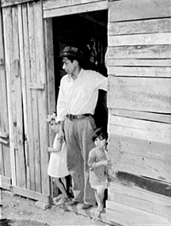
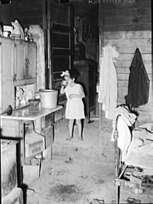
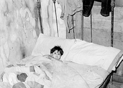
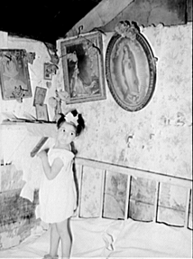

Over the past several years, I have been working
on a book on FSA photography in which I hope to show the influence of
1930s racial attitudes on the photographs taken by Dorothea Lange, Russell
Lee, and their colleagues. I have been particularly interested in a group
of photographs that Russell Lee took of Mexican households in San Antonio
and the Rio Grande valley in the winter and spring of 1939. The following
images are typical of Lee’s photographic coverage of housing and
health conditions in the several Mexican enclaves he visited. Since it
was not the practice of FSA photographers to record the names of their
subjects, we have to piece together this particular family series by visual
identification. We can deduce that these images are of the same family,
because the young girl appears in figures one, two, and four, while the
young boy appears in figures one and three. It would appear that the man
in figure one is a single head of household because no adult female appears
in any of the images. It also appears that Lee took the doorway shot first
and then proceeded to the interior of the house. The captions for the
four images read as follows:
| 
Figure 1: Mexican father and children in
doorway of their home made of scrap lumber. |

Figure 2: Interior of Mexican home.
San Antonio, Texas. |
| 
Figure 3: Mexican boy sick in bed.
San Antonio, Texas. |

Figure 4: Corner of bedroom. Mexican section,
San Antonio, Texas. |
These images offer evidence about how photographer Russell Lee managed
to enter Mexican households and gain access to such a private space as
the family bedroom. We know from interviews with Lee that he did not speak
Spanish, yet he was able to gain the cooperation of his Mexican subjects
to record intimate details of their lives. Figure 1 is a key image in
this regard because it has the father standing in the doorway of his home
in a pose that suggests both parental authority and an ability to provide
for his offspring. He is dressed in a clean white shirt and his daughter
in a dress with a bow in her hair. This attire is similar to what a family
might have worn in a visit to a photographer’s studio to have their portrait
recorded. In effect, Lee gained the cooperation of his subjects by allowing
them to present themselves to the camera. Little did they know that Lee
would undercut the father’s authority by writing a brief caption that
called attention to the makeshift construction of the house.
Lee’s strategy apparently worked, for the remainder of the series is shot
indoors. What did Lee seek in these interior shots? Figure 2 provides
several clues. He has posed the young girl at the entrance to the kitchen,
and he shows her drinking out of a metal cup. We are to presume that she
has dipped water from the bucket that sits in front of her on top of the
stove. From examining other photographs that Lee took in San Antonio,
we can surmise that he was calling attention to the lack of proper sanitary
facilities in Mexican households and to the dangers of drawing from contaminated
water supplies. In the foreground of the image, his focus falls on the
kitchen’s dirt floor. In the captions for other photographs he labels
such floors as health hazards. As if to drive home his point, he takes
a picture of a young boy lying in bed [Figure 3], and the caption claims
that he is sick. Yet a close examination of this image shows that the
youngster was well enough to pose in the doorway in the first image in
the series. The final photograph in the series is by far the most intriguing.
The young girl stands on a bed and points to objects assembled in the
corner of the room. The caption is silent on the meaning of these objects,
but from other Lee photographs of similar assemblages we learn that this
is a home altar, and that most Mexican households have such sacred spaces.
From the date of these photographs (March 1939) we learn that Lee visited
the majority of Mexican households during Lent. Lee’s subjects may have
given him access to interiors because they wanted him to record their
religious displays and to see the extra decorations they applied for the
observance of the Easter season.
While Lee duly recorded these altars, he rarely made mention of them in
his captions except to say that many of them were “quite primitive.”
He employed that term much the same as Arthur Rothstein did in captioning
his photographs of Gee’s Bend, Alabama. Scholars have amply documented
the importance of Mexican home altars, which were constructed by female
heads of households who also passed the tradition down to their daughters.
Presumably, the young girl in the series is learning the craft from her
mother. Yet why would Lee exclude the mother from the series? Perhaps
she was absent, although the daughter’s dress and the bow in her hair
suggest that the mother might have outfitted her daughter for the photographs.
Lee appears to have been duplicating the strategy he employed in creating
Christmas Dinner in Iowa. Here is a family torn apart by poverty. Yet
in his Iowa photographs, Lee was creating images designed to elicit sympathy
for hard-working white sharecroppers who needed temporary federal assistance
to weather hard times. Lee’s photographs and their captions suggest that
he had no such agenda in mind in his visit to Texas. Quite the contrary,
his images and captions of Mexican households called attention to dirt,
disease, and disorder and suggested that the Mexicans were a primitive
people unable to care for themselves. Ironically this factual finding
was not a prelude to a call for help for Mexicans but a dramatic statement
that if white Texans did not receive federal assistance that they would
end up in a primitive condition akin to their Mexican neighbors.

|